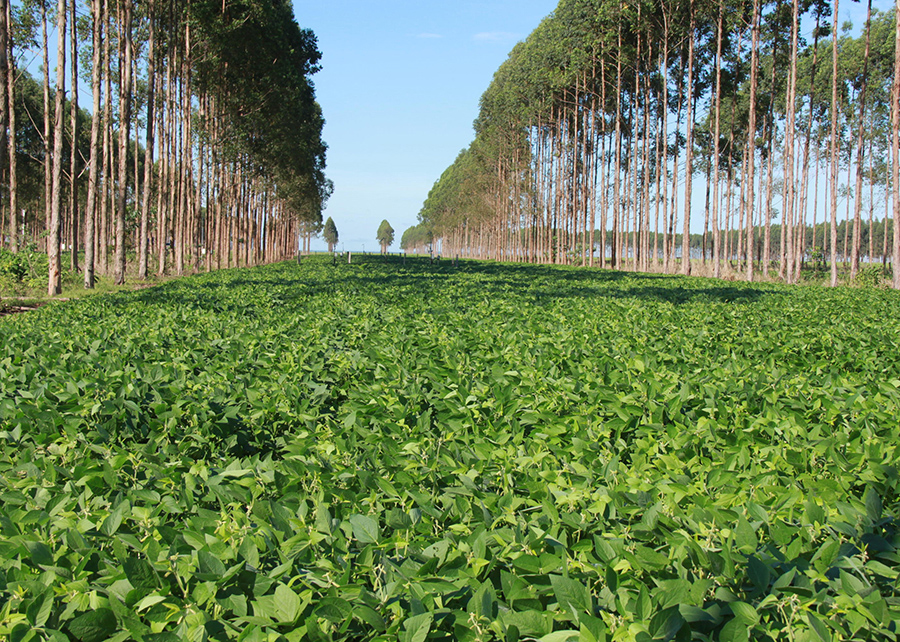
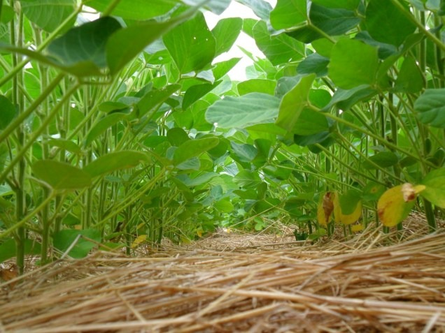
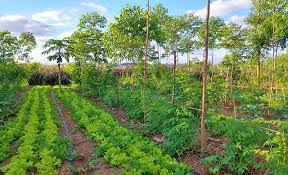
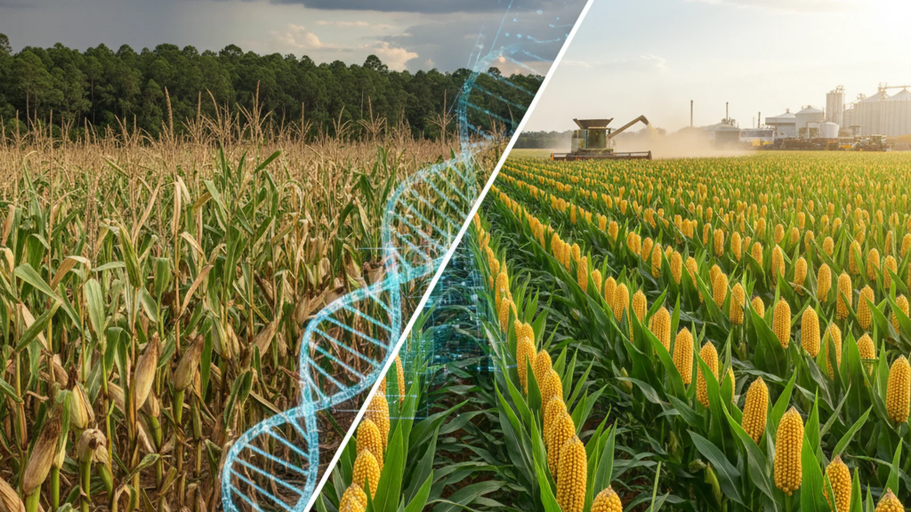

Contexto: Por que a agricultura brasileira é vulnerável?
O Brasil é uma potência agropecuária global, mas sua produção depende fortemente das condições climáticas. O aumento da temperatura média e a maior frequência de eventos extremos afetam diretamente a produtividade.
Dependência das chuvas
Grande parte das lavouras é de sequeiro (não irrigada), dependendo do regime natural de precipitações.
Extensão territorial
Diferentes regiões enfrentam riscos climáticos distintos, exigindo estratégias descentralizadas.
Especialização produtiva
Culturas como soja, milho, café e cana possuem faixas climáticas ideais bastante específicas.
Principais Riscos Climáticos por Região
Clique nas abas abaixo para conferir os impactos mapeados por pesquisadores:
Região Centro-Oeste
Riscos: Aumento da temperatura, maior duração das secas e atraso do período chuvoso.
Consequências: Menor produtividade da soja e riscos severos para o milho safrinha.
Região Sudeste
Riscos: Ondas de calor intensas, eventos extremos de chuva e escassez hídrica.
Consequências: Prejuízos na cafeicultura, danos à horticultura e estresse na pecuária leiteira.
Região Nordeste
Riscos: Intensificação das secas e avanço da desertificação em áreas vulneráveis.
Consequências: Queda de produtividade e forte pressão social sobre a agricultura familiar.
Região Sul
Riscos: Chuvas torrenciais, enchentes frequentes e tempestades severas.
Consequências: Erosão acentuada do solo, perda de safras e danos à infraestrutura rural.
Estratégias de Adaptação Tecnológica

ILPF (Integração Lavoura-Pecuária-Floresta)
Diversifica a renda, melhora o solo e aumenta o conforto térmico animal com o sombreamento de árvores.

Sistema Plantio Direto
Evita o revolvimento da terra, conservando a umidade profunda e reduzindo a perda de nutrientes.

Sistemas Agroflorestais
Consorciam árvores e plantações agrícolas, gerando regulação microclimática e protegendo a biodiversidade.

Melhoramento Genético
Desenvolvimento de sementes e cultivares tolerantes à seca prolongada e a novas pragas térmicas.
Simulador de Resiliência de Propriedade
Insira os dados da sua propriedade fictícia para calcular o nível estimado de adaptação climática baseado no plano ABC+:
Obstáculos e Políticas Públicas
O principal pilar governamental é o Plano ABC+ (2020-2030), focado na expansão de sistemas de baixa emissão de carbono.
| Gargalo Identificado | Impacto no Campo |
|---|---|
| Baixa adoção tecnológica | Reduz a resiliência de pequenos produtores frente a estiagens. |
| Falta de crédito climático | Dificulta o investimento inicial em infraestrutura verde sustentável. |
| Desmatamento ilegal | Prejudica o regime de chuvas que alimenta os aquíferos agrícolas. |